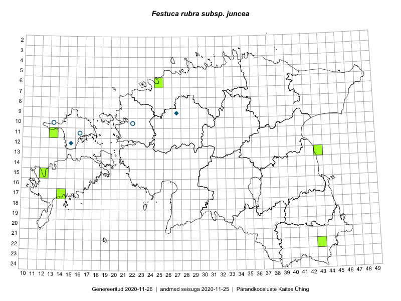

Festuca rubra subsp. juncea — luga-aruhein
Poaceae :: Festuca rubra subsp. juncea (Hack.) Soó (11)

← Festuca rubra subsp. arenaria × Festuca rubra subsp. rubra | tagasi liigiloendi juurde | Festuca rubra subsp. litoralis →
Kaart põhineb 11 kirjel:
herbaareksemplare 11
Taime kaasaegsed ja ajaloolised leiukohad asuvad 7 ruudus.
Tingmärgid ja ruutude arvud periooditi (U1 / V2 )
█ 2006–2020 (2/–)
◆/◇ 1971–2005 (2/0)
○ 1921–1970 (3/0)
+ kuni 1920 (0/0)
× hävinud (–/0)
? kaheldav (–/0)
| Ruut | Leidja(d) | Leiuaeg | Kirje |
|---|---|---|---|
| 10-22 | 1962-07-23 | TAM0000569: Festuca rubra subsp. juncea (Hack.) Soó | |
| 09-27 | 1998-09-19 | TAM0000571: Festuca rubra subsp. juncea (Hack.) Soó | |
| 09-27 | 1998-09-19 | TAM0000572: Festuca rubra subsp. juncea (Hack.) Soó | |
| 11-16 | 1969-07-06 | TAM0000574: Festuca rubra subsp. juncea (Hack.) Soó | |
| 22-43 | Toomas Kukk, Tiit Hallikma | 2016-06-15 | TAA0138069: Festuca rubra subsp. juncea (Hack.) Soó |
| 22-43 | Toomas Kukk, Tiit Hallikma | 2016-06-15 | TAA0138070: Festuca rubra subsp. juncea (Hack.) Soó |
| 12-15 | Vilma Kuusk | 1971-06-14 | TAA0103756: Festuca rubra subsp. juncea (Hack.) Soó |
| 10-13 | P. Põldmaa | 1970-07-16 | TAA0103757: Festuca rubra subsp. juncea (Hack.) Soó |
| 10-13 | P. Põldmaa | 1970-07-16 | TAA0103758: Festuca rubra subsp. juncea (Hack.) Soó |
| 13-43 | Ott Luuk, Meeli Mesipuu | 2018-09-19 | TAA0152510: Festuca rubra subsp. juncea (Hack.) Soó |
| 13-43 | Ott Luuk, Meeli Mesipuu | 2018-09-19 | TAA0152511: Festuca rubra subsp. juncea (Hack.) Soó |
Ruutude arv uue atlase andmekogu järgi. Muuhulgas arvestab vanemat herbaariumi, 2005. aasta atlase välitöölehtedelt uuesti digitaliseeritud andmeid jne. Uue atlase andmekogust pärinevad andmed on kaardile kantud siniste sümbolitega.↩︎
Ruutude arv 2005. aasta atlase (Kukk, T., Kull, T., Eesti taimede levikuatlas. Eesti Maaülikool, Põllumajandus- ja Keskkonnainstituut, Tartu, 2005) järgi. Andmeallikana on kasutatud levik.exe programmi, kus igas ruudus on registreeritud vaid uusim leid. Seetõttu on vanemate perioodide kohta andmed puudulikud. Kasutatud levik.exe andmestikus leidub mõningaid kõrvalekaldeid atlase trükis ilmunud versioonist, sagedamini tarnade ja käpaliste seas. Lisaks leidub selles andmestikus valik liike (peamiselt väheste leidudega tulnuktaimed), mille kaarte trükis ei avaldatud. Vana atlase andmed ruutudest, milles ei ole uue atlase andmekogus leide enne 2006. aastat, on kaardil esitatud punaste sümbolitega. Vana atlase andmetel hävinud ja kaheldavaid leiukohti pole hilisemate (taas)leidude põhjal korrigeeritud.↩︎